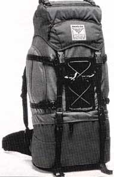

(Note:) This complements a series of Trav-E-Logs© sent while
traveling in Southeast Asia between Oct 16, 1999 and Jan 22, 2000.
If you are planning an inexpensive trip, here are some of my thoughts for this part of the world. Make sure to modify to suit your own personality. If you have specific questions, feel free to E-mail me. And please put me on distribution for your travelogue!
============== GLAD I TOOK THESE ITEMS ==============
-
(Ed. Note:) This is historical data only. Current thoughts at: Backpacking Hints
-
Nylon shell jacket, in pouch.
-
Pocket language phrase book and language dictionary. (The smaller the better.)
-
Snorkel mask to fit my face, and 1 small bath towel for beach use.
-
Spare bathing suit and long sleeve tee for sun protection in the water.
-
Aqua socks or Speedo "Surf Walker" -- one pair for every two months.
-
Colorful cotton Tee shirts -- changed every day, and gave them away as I purchased new Tees.
-
Knife-fork-spoon and very sharp paring knife in pouch.
-
Swiss Army Knife -- sharpen before leaving.
-
One cotton and one silk sleeping bag liners.
-
Point and shoot camera. Compact binoculars.
-
220 volt, 40 watt light bulb for reading. 3.5 " computer disks for writing and saving when web access was down.
-
Laundry bag. Clothes line and several eye bolts. Three small clothes pegs.
-
Two small Japanese terry towels for washing and drying. Store each in zip lock bag, the damp one in the day sack.
-
Mini tape recorder. (Blank tapes were often available.)
-
A high quality, rugged backpack, only half full upon departure (see image).
-
A rugged day sack is also needed, though you may prefer to purchase it overseas.
============= THINGS TO TAKE NEXT TIME ==============
-
Convertible pants -- zip off the legs and they become shorts. Especially great for air-conditioned buses.
-
A bee-keepers hat to keep insects at bay while sleeping. (Mosquito netting is too bulky, and the coils are not a healthy long-term solution.) An Army-Navy store sold me the netting which I attached to a cotton canvas safari hat.
-
Underwater disposable camera. Did not see this variety for sale on my trip.
-
Cable ties to secure pack closures. (Slows the petty thief, not the professional.)
============== THINGS TO LEAVE HOME ==============
-
Bulky items such as sleeping bag, mattress, Swim fins (rent if you are not a strong swimmer).
-
Jeans, long pants, dress shirt (other than return flight clothing). If needed during trip, buy.
-
Valuables, such as expensive watches, jewelry, expensive cameras.
-
Sunglasses (in the rainy season), ankle and knee braces.
-
Pots, pans, stove, fuel. (Fruit is cheap, and always in season).
-
Travel guides with nice photos -- just too heavy. Some backpackers will buy and sell used travel guides as they travel from country to country. I like to keep mine, so I sent some home.
-
Water bottles -- just buy bottled water in size to fit the side pockets on your pack, and then refill.
-
Deodorant, shave cream, shampoo -- use plain bar soap.
-
Hair brush -- cut and shave on top every two months, and enjoy the freedom.
============== DISCUSSION and POINTERS ==============
As an alternative to convertible pants, I purchased light weight pants (22000 Rupia in Bali). Kept handy in day sack.
Wore inexpensive hiking boots when pack was on my back, but surf mocs (with socks) at all other times.
Wore flip flops in dorms.
Postage rates in Malaysia are much cheaper than Indonesia.
Ask for better currency exchange rates for bills and (American Express) traveler's checks of larger demonination (i.e. US$100).
ONLY CARRY THE MOST RECENTLY ISSUED CURRENCY!
============== THE PELNI EXPERIENCE ==============
Try to obtain a Pelni Schedule before arriving in Indonesia -- most helpful for long-range planning. This schedule gives sailing times for each ship, as well as interruptions for overhaul. Pelni has a web site (see links below) -- hopefully it will expand to show more schedule details
in the future.
Their are six classes of Pelni offices; ranging from "Cabang A" which can sell just about anything, to "Cabang D" and "Sub Cabang" offices, which are highly restricted in the types of tickets they can sell.
If you must travel "Ekonomi Kelas", bring food for meals or buy at snack bar on top deck, back of ship. (Food is also sold by vendors plying the decks on some journeys.) Bring ear plugs to use while sleeping (4 am call to prayer), and also while eating in snack bar (rock music).
If traveling alone, make friends immediately for security reasons. You can't watch your backpack while in the bathroom, sleeping, etc. Security is the single most important reason to NOT travel "Ekonomi Kelas".
============== INTERNATIONAL FERRIES ==============
The show time is several hours before departure to facilitate passport control (and customs?). My experience was between Dumai and Melaka. Had to surrender passport at the ferry office in town several hours before departure, but then it was returned to me in less than 30 minutes, after
which I was free to walk around town for another hour or so. When boarding the ferry, just a cursory look for declarations was made, except for folks obviously carrying commercial items. On the ferry, the passports were again collected for just a short time, then returned. Upon arrival in Melaka, the passengers just walk off the dock -- all formalities have been completed.
In Dumai, we were herded through gates, but again, the process took just a few minutes.
============== E-MAIL -- This is what I did ==============
-
Established a free e-mail account that permits forwarding. I am very happy with Bigfoot, and have used them for years.
-
Established several free web-based email clients. Hotmail, Yahoo, Netscape are all popular. LEARN THE RULES! These services may erase some email if allotted storage space is exceeded. I told friends NOT to send jokes nor large files.
-
Automatically forwarded all email to Hotmail, Netscape, and my contracted ISP.
-
To check e-mail from any computer on the Internet (i.e. cyber cafe), use Netscape or iExplorer, go to your email client (Hotmail or Yahoo, etc.) and enter your account name and password.
-
I cleaned out much of the Inbox each time I accessed the account to ensure the space allotment would not be exceeded, with the added benefit of keeping download times to a minimum.
-
Internet prices varied significantly from town to town. Bargaining is a must. Some places charge much less for word processing, so I would compose messages there, save to my floppy, then pay the higher price to download and upload email. Sometimes the main Post office was the cheapest cyber
cafe in town.
-
No need to carry a computer! It's all available on-line. Before I left, I emailed myself most of the important and emergency information I could think of. Then I saved a copy of it on 2 disks as well.
============== PHOTOS ==============
Both Kodak and Fuji 35 mm film were used. Processing was done each time a saw a respectable looking developer, then kept pictures with me, sending some of the processed film home. Requesting them to NOT cut film in 4-image strips was not always successful. All negatives seem to have scratches running along the length of the roll, although no reprints have been made. The good news is that the photos did not become moldy, and PhotoShop does wonders.
============== COSTS ==============
After paying for round trip airfare and medical necessities, my budget
was $100 per week. This permits some luxury items, but not many. About
25% was spent on clothing, traditional clothing, batik paintings, CDs,
Ikat, etc. If traveling as a pair, lodging costs will only be slightly less.
============== LINKS OF INTEREST ==============
http://www.lonelyplanet.com/
(ii jendela removed -link inactive)
http://www.pelni.co.id
(mkmarina removed - link inactive)
============== CLICK FOR MORE SOUNDS ==============
Gamelan music, "Colenak". (May take a few minutes to load, but you can save and play it over.)
Gekko recording 3
Gekko recording 4
=============
Send e-mail to Bill at the Juno.com address dancer2seasia